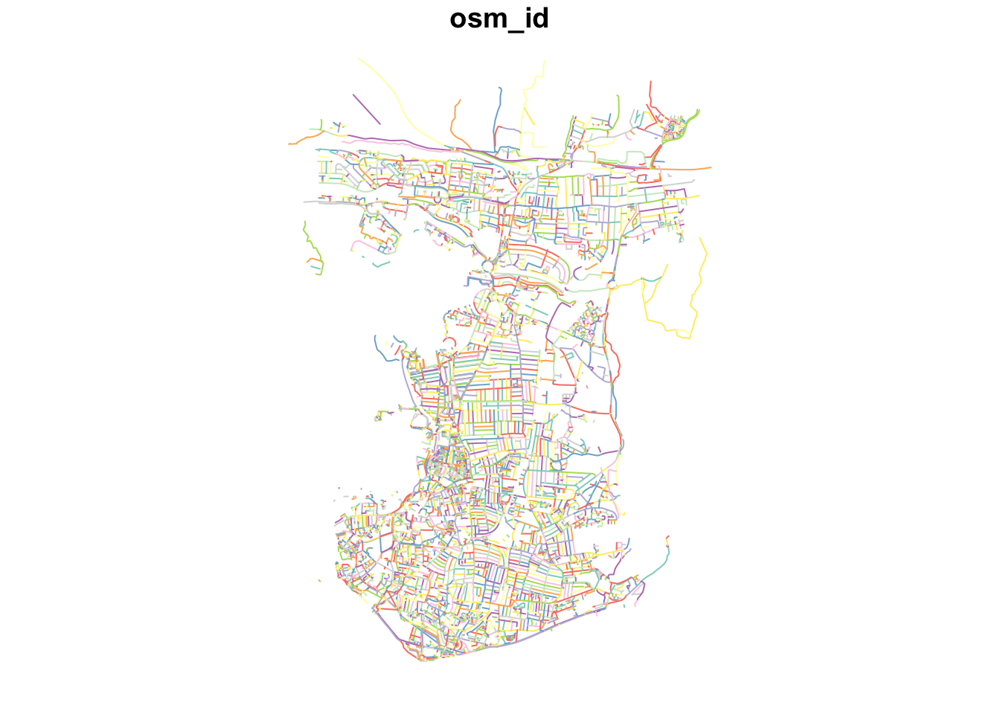
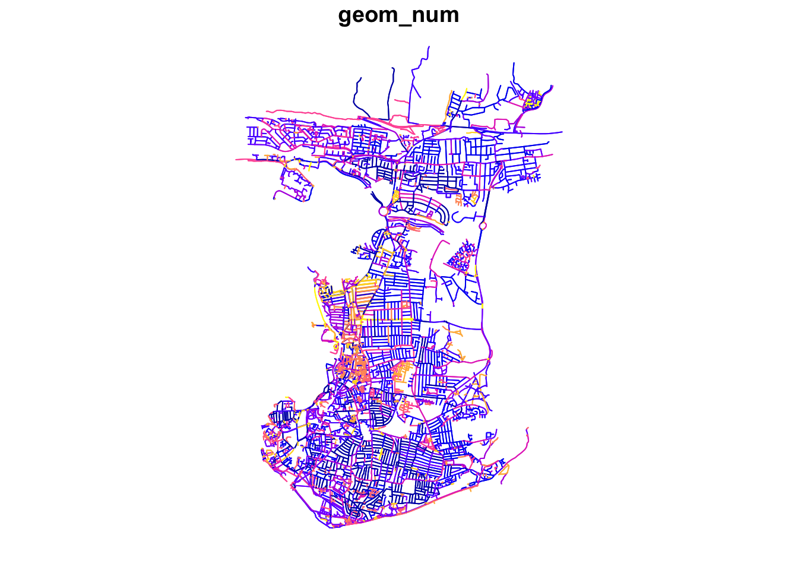

10 Transport Network Analysis
This week we will cover a different type of data: network data. We will take a look at how we can use network data to measure accessibility using the dodgr R library. We will calculate the network distances between combinations of locations (i.e. a set of origins and a set of destinations). These distances can then, for instance, be used to calculate the number of a resource (e.g. fast-food outlets) within a certain distance of a Point of Interest (e.g. a school or population-weighted centroid).
10.1 Lecture slides
The slides for this week’s lecture can be downloaded here: [Link]
10.2 Reading list
Essential readings
- Geurs, K., Van Wee, B. 2004. Accessibility evaluation of land-use and transport strategies: review and research directions. Journal of Transport Geography 12(2): 127-140. [Link]
- Higgins, C., Palm, M. DeJohn, A. et al. 2022. Calculating place-based transit accessibility: Methods, tools and algorithmic dependence. Journal of Transport and Land Use 15(1): 95-116. [Link]
Suggested readings
- Schwanen, T. and De Jong, T. 2008. Exploring the juggling of responsibilities with space-time accessibility analysis. Urban Geography 29(6): 556-580. [Link]
- Van Dijk, J., Krygsman, S. and De Jong, T. 2015. Toward spatial justice: The spatial equity effects of a toll road in Cape Town, South Africa. Journal of Transport and Land Use 8(3): 95-114. [Link]
- Van Dijk, J. and De Jong, T. 2017. Post-processing GPS-tracks in reconstructing travelled routes in a GIS-environment: network subset selection and attribute adjustment. Annals of GIS 23(3): 203-217. [Link]
10.3 Transport Network Analysis
The term network analysis covers a wide range of analysis techniques ranging from complex network analysis to social network analysis, and from link analysis to transport network analysis. What the techniques have in common is that they are based on the concept of a network. A network or network graph is constituted by a collection of vertices that are connected to one another by edges. Note, vertices may also be called nodes or points, whilst edges may be called links or lines. Within social network analysis, you may find the terms actors (the vertices) and ties or relations (the edges) also used.
10.3.1 Accessibility in Portsmouth
For this week’s practical, we will be using Portsmouth in the UK as our area of interest for our analysis. One prominent topic within the city is the issue of public health and childhood obesity. According to figures released in March 2020 by Public Health England, more than one in three school pupils are overweight or obese by the time they finish primary school within the city; this is much higher than the national average of one in four. One potential contributor to the health crisis is the ease and availability of fast-food outlets in the city. In the following, we will measure the accessibility of fast-food outlets within specific walking distances of all school in Portsmouth starting at 400m, then 800m and finally a 1km walking distance. We will then aggregate these results to Lower Super Output Areas (LSOA) and overlay these results with some socio-economic variables.
To execute this analysis, we will need to first calculate the distances between our schools and fast-food outlets. This involves calculating the shortest distance a child would walk between a school and a fast-food outlet, using roads or streets. We will use the dodgr R package to conduct this transport network analysis.
All calculations within the dodgr library currently need to be run in WGS84/4236. This is why we will not transform the CRS of our data in this practical.
10.3.2 Getting started
Open a new script within your GEOG0030 project and save this script as wk10-accessibility-analysis.r. At the top of your script, add the following metadata:
R code
# Accessibility of fast-food outlets in Portsmouth
# Date: January 2024Now let us add all of the libraries we will be using today to the top of our script:
R code
# load libraries
library(tidyverse)
library(sf)
library(osmdata)
library(dodgr)To create our network and Origin-Destination dataset, we will need data on schools, fast-food outlets, and a street network. One data sources that contains probably information on all three topics is OpenStreetMap.
Please refer back to Week 6 if you have forgotten about using the Overpass API and key and value pairs.
10.3.3 Network data
To download our road network dataset, we first define a variable to store our bounding box coordinates, p_bbox(). We then use this within our OSM query to extract specific types of road segments within that bounding box - the results of our query are then stored in an osmdata object. We will select all OSM features with the highway tag that are likely to be used by pedestrians (e.g. not motorways).
R code
# define our bbox coordinates for Portsmouth
p_bbox <- c(-1.113197, 50.775781, -1.026508, 50.859941)
# pass bounding box coordinates into the OverPassQuery (opq) function only
# download features that are not classified as motorway
osmdata <- opq(bbox = p_bbox) |>
add_osm_feature(key = "highway", value = c("primary", "secondary", "tertiary",
"residential", "path", "footway", "unclassified", "living_street", "pedestrian")) |>
osmdata_sf()In some instances the OSM query will return an error, especially when several people from the same location are executing the exact same query. If this happens, you can just read through the instructions and download a prepared copy of the data that contains all required OSM Portsmouth data instead: [Link].
You can load these downloaded data as follows into R:
R code
load("../path/to/file/ports_ff.RData")
load("../path/to/file/ports_roads_edges.RData")
load("../path/to/file/ports_schools.RData")After loading your data, you can continue with the analysis in the Measuring Accessiblity section below, starting with the creation of a network graph with the ‘foot weighting’ profile.
The osmdata object contains the bounding box of your query, a time-stamp of the query, and then the spatial data as osm_points, osm_lines, osm_multilines and osm_polgyons (which are listed with their respective fields also detailed). Some of the spatial features maybe empty, depending on what you asked your query to return. Our next step therefore is to extract our spatial data from our osmdata object to create our road network data set. This is in fact incredibly easy, using the traditional $ R approach to access these spatial features from our object.
Deciding what to extract is probably the more complicated aspect of this - mainly as you need to understand how to represent your road network, and this will usually be determined by the library/functions you will be using it within. Today, we want to extract the edges of the network, i.e. the lines that represent the roads, as well as the nodes of the network, i.e. the points that represent the locations at which the roads start, end, or intersect. For our points, we will only keep the osm_id data field, just in case we need to refer to this later. For our lines, we will keep a little more information that we might want to use within our transport network analysis, including the type of road, the maximum speed, and whether the road is one-way or not.
R code
# extract the points, with their osm_id.
ports_roads_nodes <- osmdata$osm_points[, "osm_id"]
# extract the lines, with their osm_id, name, type of highway, max speed and
# one-way attributes
ports_roads_edges <- osmdata$osm_lines[, c("osm_id", "name", "highway", "maxspeed",
"oneway")]To check our data set, we can quickly plot the edges of our road network using the plot() function:
R code
# inspect
plot(ports_roads_edges, max.plot = 1)
Because we are focusing on walking, we will overwrite the oneway variable by suggesting that none of the road segments are restricted to one-way traffic which may affect our analysis as well as the general connectivity of the network.
R code
# overwrite one-way default
ports_roads_edges$oneway <- "no"Now we have the network edges, we can turn this into a graph-representation that allows for the calculation of network-based accessibility statistics.
10.3.4 Measuring accessibility
Before we can construct our full network graph for the purpose of accessibility analysis, we need to also provide our Origin and Destination points, i.e. the data points we wish to calculate the distances between. According to the dodgr documentation, these points need to be in either a vector or matrix format, containing the two coordinates for each point for the origins and for the destinations.
As for our Portsmouth scenario we are interested in calculating the shortest distances between schools and fast-food outlets, we need to try and download these datasets from OpenStreetMap as well. Following a similar structure to our query above, we will use our knowledge of OpenStreetMap keys and values to extract the points of Origins (schools) and Destinations (fast-food outlets) we are interested in:
R code
# download schools
schools <- opq(bbox = p_bbox) |>
add_osm_feature(key = "amenity", value = "school") |>
osmdata_sf()
# download fast-food outlets
ff_outlets <- opq(bbox = p_bbox) |>
add_osm_feature(key = "amenity", value = "fast_food") |>
osmdata_sf()We also need to then extract the relevant data from the osmdata object:
R code
# extract school points
ports_schools <- schools$osm_points[, c("osm_id", "name")]
# extract fast-food outlet points
ports_ff <- ff_outlets$osm_points[, c("osm_id", "name")]We now have our road network data and our Origin-Destination (OD) points in place and we can now move to construct our network graph and run our transport network analysis.
In this analysis, we are highly reliant on the use of OpenStreetMap to provide data for both our Origins and Destinations. Whilst in the UK OSM provides substantial coverage, its quality is not always guaranteed. As a result, to improve on our current methodology in future analysis, we should investigate into a more official school data set or at least validate the number of schools against City Council records. The same applies to our fast-food outlets.
With any network analysis, the main data structure is a graph, constructed by our nodes and edges. To create a graph for use within dodgr, we pass our ports_roads_edges() into the weight_streetnet() function. The dodgr library also contains weighting profiles, that you can customise, for use within your network analysis. These weighting profiles contain weights based on the type of road, determined by the type of transportation the profile aims to model. Here we will use the weighting profile foot, as we are looking to model walking accessibility.
R code
# create network graph with the foot weighting profile
graph <- weight_streetnet(ports_roads_edges, wt_profile = "foot")Once we have our graph, we can then use this to calculate our network distances between our OD points. One thing to keep in mind is that potentially not all individual components in the network that we extracted are connected, for instance, because the bounding box cut off the access road of a cul-de-sac. To make sure that our entire extracted network is connected, we now extract the largest connected component of the graph. You can use table(graph$component) to examine the sizes of all individual subgraphs. You will notice that most subgraphs consist of a very small number of edges.
The dodgr package documentation explains that components are numbered in order of decreasing size, with $component = 1 always denoting the largest component. Always inspect the resulting subgraph to make sure that its coverage is adequate for analysis.
R code
# extract the largest connected graph component
graph_connected <- graph[graph$component == 1, ]
# inspect number of remaining road segments
nrow(graph_connected)[1] 58034# inspect
plot(dodgr_to_sf(graph_connected), max.plot = 1)
OpenStreetMap is a living dataset, meaning that changes are made on a continuous basis; as such it may very well possible that the number of remaining road segments as shown above may be slightly different when you run this analysis.
Now we have our connected subgraph, will can use the dodgr_distances() function to calculate the network distances between every possible Origin and Destination. In the dodgr_distances() function, we first pass our graph, then our Origin points (schools), in the from argument, and then our Destination points (fast-food outlets), in the to argument. One thing to note is our addition of the st_coordinates() function as we pass our two point data sets within the from and to functions as we need to supplement our Origins and Destinations in a matrix format. For all Origins and Destinations, dodgr_distances() will map the points to the closest network points, and return corresponding shortest-path distances.
R code
# create a distance matrix between schools and fast-food stores
sch_to_ff_calc <- dodgr_distances(graph_connected, from = st_coordinates(ports_schools),
to = st_coordinates(ports_ff), shortest = TRUE, pairwise = FALSE, quiet = FALSE)The result of this computation is a distance-matrix that contains the network distances between all Origins (i.e. schools) and all Destinations (i.e. fast-food outlets). Let’s inspect the first row of our output. Do you understand what the values mean?
R code
# inspect
head(sch_to_ff_calc, n = 1) 3708702676 583409150 110151723 4179720607 112032935 1684258957
35299419 4000.016 2090.485 6549.779 9033.707 10581.07 2231.919
7305624459 6806456949 1319464203 1319464086 2537832173 1319464203
35299419 11475.46 2292.263 1676.914 1680.151 1697.525 1676.914
583409150 583409150 583409150 3708702676 6806456947 3708702676
35299419 2090.485 2090.485 2090.485 4000.016 2324.454 4000.016
3708702676 4741221735 3080970373 6486730562 2526286989 360754572
35299419 4000.016 3338.84 1700.179 581.0582 7277.651 3370.976
1684760757 111811784 4547890993 596188 360666535 153334012 35309497
35299419 1359.146 3321.384 340.8823 1102.226 10474.25 2644.278 2720.491
4559843487 533710034 1584811969 35309619 35309619 1584608863
35299419 3260.791 2330.386 2580.465 2920.565 2920.565 736.0556
2530707658 210200 8501630407 163535 33033068 1517208796 1592759310
35299419 3399.756 844.6083 5996.71 3394.408 8848.641 9050.076 8915.712
33024082 1322971868 1584776930 1787982426 128227681 3119584321
35299419 9159.398 1629.029 3277.902 2400.918 6938.222 8654.517
33032892 112015327 291060 291060 360951843 360951843 1684217275
35299419 9080.482 9007.374 6483.465 6483.465 6470.802 6470.802 804.5849
1684048292 8788727818 4563340397 1446611129 1446611129 1765156609
35299419 763.0456 2526.807 1067.907 1010.408 1010.408 1967.697
688134 1584811969 117492188 1765137127 1496776935 1634771122
35299419 1418.767 2580.465 1245.823 2157.02 688.8672 2162.922
691638 672367 11653432856 28836634 1765137126 210200 851157783
35299419 2205.285 2119.323 11403.51 4603.517 2738.124 844.6083 615.1102
3357036324 8788727825 6170004942 117484085 7305624459 7305624459
35299419 788.7212 2586.476 2667.125 728.4882 11475.46 11475.46
7305624459 35510611 35510611 35510611 7305624459 7305624459 7305624459
35299419 11475.46 11564.62 11564.62 11564.62 11475.46 11475.46 11475.46
7305624459 7305624459 7305624459 7305624459 2469323680 11549983260
35299419 11475.46 11475.46 11475.46 11475.46 11017.36 6372.171
11549983260 11549983260 9563701017 3708702676 3708702676 1747135467
35299419 6372.171 6372.171 6214.692 4000.016 4000.016 4234.058
1682386860 128349051 6486730562 691582 41466838 4533088712
35299419 5712.666 3841.384 581.0582 597.3575 2654.314 4884.169
4533088770 5589038074 850508342 4639702744 5589038074 3227275829
35299419 5081.596 4823.045 375.2084 926.0127 4823.045 3808.049
1684055602 474557 1584608915 1517984612 11513738570 1684226066
35299419 753.752 556.5173 713.536 622.6949 619.2467 1225.66
27679037 1381614134 5337216850 11549983251 11549983257 11549983257
35299419 3452.874 3363.827 5233.847 6430.621 6403.298 6403.298
11549983252 11549983252 11549983252 11549983252 11549983251
35299419 6407.444 6407.444 6407.444 6407.444 6430.621
11549983251 11549983252 11549983247 11549983251 11549983251
35299419 6430.621 6407.444 6445.053 6430.621 6430.621
11549983251 11549983251 1485748038 1517209100 1517209100 9445278102
35299419 6430.621 6430.621 12026.16 9206.05 9206.05 5296.254
4179720618 4179720618 360692085 618271588 360692085 4179720618
35299419 9017.086 9017.086 8968.66 8241.571 8968.66 9017.086
21074398 21074398 269428116 2627365849 9307660916 11364252738
35299419 11656.54 11656.54 11663.78 11660.45 9225.919 3349.922
1684259012 4361632708 1314915645 7006050181 474383 474383 474383
35299419 2300.121 815.5434 3219.572 5472.963 905.8238 905.8238 905.8238
1448664912 26658915 118724163 1804412114 107228955 10713423 547019
35299419 4950.036 4968.988 858.9023 3216.095 3159.418 11313.94 4919.699
3754347320 33033074 3080970374 20464883 1517208858 107145004
35299419 1813.109 8837.749 1666.407 9276.689 9336.644 4462.093
7028566698 1314915645 36866188 1682829408 5433229750 1517208858
35299419 3177.182 3219.572 3118.604 5756.392 9216.543 9336.644
194076 130069978 360689836 108044084 108044703 111996556 1684631749
35299419 5462.571 4046.518 8897.3 6190.672 6126.632 8583.066 6672.829
107912783 112032936 210208 1240746711 1917246883 596120
35299419 6049.243 10449.69 1505.914 4995.748 11190.1 1574.826
11659717644 942789065 11527934107 1517209249 402702 26658915
35299419 5218.511 1804.091 3084.572 8780.097 4512.959 4968.988
361463301 131956097 1684597474 1381614134 1381614134 474557
35299419 3803.913 12860.3 5242.991 3363.827 3363.827 556.5173
3357036324 33032729 4533088711 5433229750 5433229750 5433229750
35299419 788.7212 9790.56 4866.125 9216.543 9216.543 9216.543
4787197864 4787197864 4787197864 4787197864 5433229750 5433229750
35299419 9198.222 9198.222 9198.222 9198.222 9216.543 9216.543
5837229773 6992272607 402703 361463301 1684581956 1684582104 35298117
35299419 5765.88 5370.828 4492.53 3803.913 4661.927 4913.756 1543.604
849545628 850213112 4533088743 1917247132 5478469295 5478469294
35299419 1510.665 1559.537 5081.936 11347.66 4719.045 4723.757
470102 1584776930 1682809610 11659717644 4533088770 4533088770
35299419 4271.398 3277.902 5811.276 5218.511 5081.596 5081.596
4533088770 4533088770 4533088770 4533088770 4533088770 320774
35299419 5081.596 5081.596 5081.596 5081.596 5081.596 4963.868
8501630403 107887646 402702 1681595494 11549983252 8489626386
35299419 6036.923 5140.89 4512.959 5601.532 6407.444 4625.997
1917246879 1917246684 5589038074 5589038074 5589038074 5589038074
35299419 11260.39 11285.01 4823.045 4823.045 4823.045 4823.045
4533088711 4533088714 4533088711 4533088714 4533088714 4533088713
35299419 4866.125 4895.861 4866.125 4895.861 4895.861 4890.115
7305624459 110151723 110151723 1440517039 110151723 110151723
35299419 11475.46 6549.779 6549.779 6529.533 6549.779 6549.779
1440517039 29368594 26658915 7305624459 106007661 8987883618
35299419 6529.533 4582.555 4968.988 11475.46 4548.575 4136.321
5859802411 518610 518610 518611 800803720 290950 4081504238
35299419 1129.672 1302.289 1302.289 1320.727 3344.675 4464.824 1332.334
4081504206 4533088742 35510611 21074398 6732089007 291060 7006091789
35299419 1122.165 5061.751 11564.62 11656.54 3002.79 6483.465 5549.637
4559843598 5049080642 1917246684 35309619 1740407820 158373125
35299419 3135.612 3166.975 11285.01 2920.565 1677.06 2312.611
7006142009 7538876197 1787929945 7006142009 7006142009 4533088693
35299419 5620.269 5518.542 5520.407 5620.269 5620.269 4733.129
851157206 1592759339 191611 107545686 8788625297 8788625298
35299419 1128.534 8910.839 2060.98 7490.057 1114.958 1092.273
8788625298 4081504206 8788625298 4936929522 691638 2113130392
35299419 1092.273 1122.165 1092.273 4661.76 2205.285 3361.825
8788728291 4741418602 9465974729 4559843597 4559843597 360754572
35299419 2738.453 3026.335 3260.599 3275.482 3275.482 3370.976
360754572 1947998799 107228953 4559843597 360465477 691582
35299419 3370.976 3400.026 3139.566 3275.482 2487.06 597.3575
1584777018 7111358956 6801562238 6801562238 7111358956
35299419 3294.96 7376.95 7338.052 7338.052 7376.95Our output shows the calculations for the first school - and the distances between the school and every fast-food outlet. Because we manually overwrote the values for all one-way streets as well as that we extracted the larges connected graph only, we currently should not have any NA values.
The dodgr vignette notes that a distance matrix obtained from running dodgr_distances on graph_connected should generally contain no NA values, although some points may still be effectively unreachable due to one-way connections (or streets). Thus, routing on the largest connected component of a directed graph ought to be expected to yield the minimal number of NA values, which may sometimes be more than zero. Note further that spatial routing points (expressed as from and/or to arguments) will in this case be mapped to the nearest vertices of graph_connected, rather than the potentially closer nearest points of the full graph.
The next step of processing all depends on what you are trying to assess. Today we want to understand which schools have a closer proximity to fast-food outlets and which do not, quantified by how many outlets are within walking distance. We will therefore look to count how many outlets are with walking distance from each school and store this as a new column within our ports_school data frame.
R code
# fastfood outlets within 400m
ports_schools$ff_within_400m <- rowSums(sch_to_ff_calc <= 400)
# fastfood outlets within 800m
ports_schools$ff_within_800m <- rowSums(sch_to_ff_calc <= 800)
# fastfood outlets within 1000m
ports_schools$ff_within_1km <- rowSums(sch_to_ff_calc <= 1000)You can inspect the ports_schools object to see the results of this analysis.
10.4 Assignment
Now you have calculated the number of fast-food outlets within specific distances from every school in Portsmouth and should get the idea behind a basic accessibility analysis, your task is to estimate the accessibility of fast-food outlets at the LSOA scale and compare this to the 2019 Index of Multiple Deprivation.
This skills and steps required for this analysis are not just based on this week’s practical, but you will have to combine all your knowledge of coding and spatial analysis you have gained over the past weeks.
One way of doing this, is by taking some of the following steps:
- Download the 2011 LSOA boundaries and extract only those that relate to Portsmouth.
- Download the 2019 Index of Multiple Deprivation scores.
- Decide on an accessibility measure, such as:
- The average number of fast-food restaurants within
xmeters of a school within each LSOA. - The average distance a fast-food restaurant is from a school within each LSOA.
- The (average) shortest distance a fast-food restaurant is from a school within each LSOA.
- The minimum shortest distance a fast-food outlet is from a school within each LSOA.
- The average number of fast-food restaurants within
- Aggregate accessibility scores to the LSOA level.
- Join the 2019 Index of Multiple Deprivation data to your LSOA dataset.
- For each IMD decile, calculate the average for your chosen aggregate measure and produce a table.
Using your approach what do you think: are fast-food restaurants, on average, more accessible for students at schools that are located within LSOAs with a lower IMD decile (more deprived) when compared to students at schools that are located within LSOAs with a higher IMD decile (less deprived)?
10.5 Want more? [Optional]
We have now conducted some basic accessibility analysis, however, there is some additional fundamental challenges to consider in the context of transport network and accessibility analysis:
- How do the different weight profiles of the
dodgrpackage work? How would one go about creating your own weight profile? How would using a different weight profiles affect the results of your analysis? - Why do we have unconnected segments in the extracted transport network? How would you inspect these unconnected segments? Would they need to be connected? If so, how would one do this?
- Why you think all Origins and Destinations are mapped onto the closest network points? Is this always the best option? What alternative methods could you think of and how would you implement these?
If you really want to take a deep dive into accessibility analysis, there is a great resource that got published recently: Introduction to urban accessibility: a practical guide in R.
10.6 Before you leave
Having finished this tutorial on transport network analysis and, hopefully, having been able to independently conduct some further area-profiling using IMD deciles, you have now reached the end of this week’s content and the end of Geocomputation! It is now inevitable: time for that reading list.